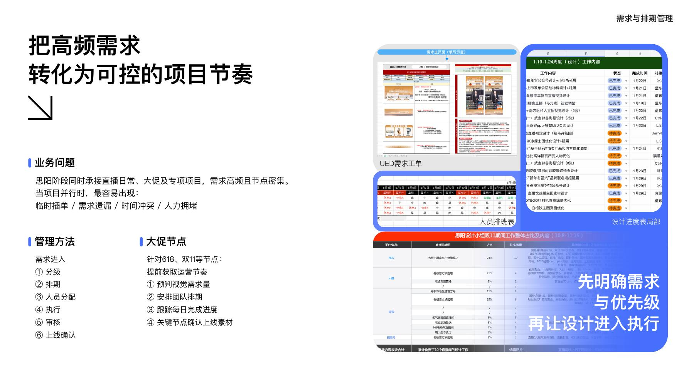
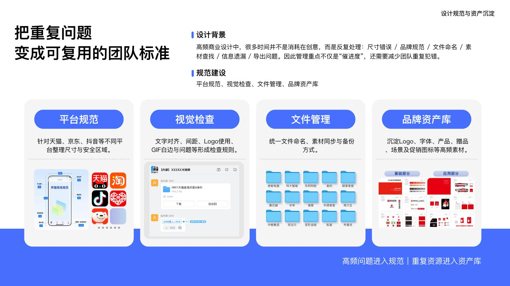
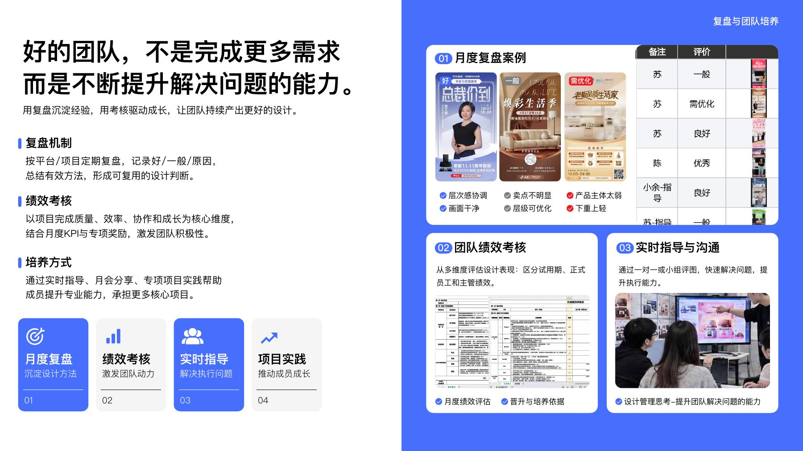

HOMEPAGE / 07 — 入口位置
多品牌直播与电商视觉
按品牌、平台接收工单，覆盖天猫、京东、抖音、视频号等触点；持续处理画面、主图、贴片和延展物料。
从关键创意到团队协作，我在多品牌直播日常与专项项目之间，组织人员、节奏与视觉质量。
陈其林 / 品牌视觉 · 设计统筹管理01 / 工作现场
一边是多个品牌与平台的直播视觉，持续响应、反复更新；另一边是新品发布等专项项目，需要集中创意并把控关键画面。两类任务争夺同一组人的时间，我需要判断轻重、组织资源、守住质量。
按品牌、平台接收工单，覆盖天猫、京东、抖音、视频号等触点；持续处理画面、主图、贴片和延展物料。
围绕 G30 等项目承担视觉统筹与核心设计，让主视觉延展至预热、电商、直播与线下物料。
先确认业务目标、使用场景与上线时间，再决定由谁承接、在哪个节点检查。
02 / 具体管理动作
用工单记录背景、平台、上线时间和优先级。紧急处理、小幅修改与长周期创意不走同一种节奏；大促前先对齐运营节点，预判视觉需求。
复杂创意与主视觉由更有经验的设计师承担；常规延展、局部调整和贴片由美工与初级成员承接。我监督工单承接，并在重点项目继续参与主创。
检查品牌调性、信息层级与产品主体，也核对尺寸、安全区、Logo、文件命名和导出细节。把高频错误写进规范，让下次少从头解释。


03 / 管理案例：2024 年 618
多个直播间的活动节点与权益同时变化，团队还要维持日常设计支持。我提前向运营了解预热、爆发和返场节奏，安排设计准备与人员覆盖，并跟进关键素材的确认。
先问清各平台活动节奏、设计需求和上线时间。
确认参考、视觉方向和权益信息，再展开成套物料。
根据需求调整班次，处理临时任务并持续跟进进度。
提前确认贴片更换和权益调整，安排后续休息与日常工作。
报告记录的整体采用情况约为 83%；这是设计采用率，不代表销售转化或个人独立产出。
通过预排与跟进覆盖集中节点，具体任务仍由团队协作完成。
发现问题天猫分项做了 12 套视觉，只有 4 套被采用。复盘发现，业务目标与设计方向在运营端尚未明确，需求反复变化，造成设计返工。
推动改进我先在设计团队内拆解需求，区分方向确认与延展执行，明确优先级、分工和节点，避免方向未定就反复制作。需求仍反复变动时，我持续与运营负责人对齐目标、设计方向和确认节点；仍未改善，再向其直属领导反馈，推动运营负责人、其直属领导与设计方三方统一需求确认、方向评审和变更流程。
后续结果三方形成共同的对接方式后，后续需求表达和工作配合更清楚，双方的工作效率与协作方式得到改善。管理既要守住团队内部的交付，也要把控外部需求和对接流程。
04 / 团队质量与成长
我会在日常审核中指出具体问题，也把重复出现的判断整理成团队能使用的检查项。月度复盘、点对点评图、KPI 评分和专项贡献分配，让“做完”之后还有下一次做得更好的依据。
对齐、间距、Logo、GIF 白边、文件命名与备份，避免基础错误反复出现。
讨论层级、产品主体与卖点。比如背景抢走权益注意力时，先减少干扰，再强化信息。
依据质量、效率、协作与成长评价成员；下属评分由我提交人事。
专项项目有实际贡献分配记录，让额外投入有明确反馈。

05 / 能力迁移
思阳证明了我能带小团队做多品牌交付；BFB 则让我把这套判断用于品牌、电商与产品并行的内部协作。两个阶段的人员关系和职责不同，但都要求把创意质量与业务节奏连接起来。
常驻管理 3–5 人设计团队，组织日常与专项任务，安排排期、审核、复盘和成员评价；自己继续承担重点项目主创。
协调 1–3 人设计工作，对接品牌、电商与产品需求，跟进进度与最终视觉质量。通过模块和模板处理重复延展，保留关键画面的人工判断。